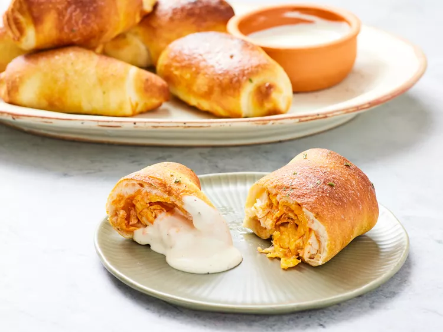

Buffalo Chicken Pizza Rolls

Description
These Buffalo chicken pizza rolls are filling little rolls—the perfect bite-sized appetizer or snack. The Buffalo sauce, chicken, and cheese ratio is ideal; it's not too saucy or overly spicy. The ranch butter brushed overtop adds another layer of herbaceous flavor that's a new spin on a classic combo.
Ingredients
- 1/2 cup shredded cooked chicken
- 2 ounces low-moisture part-skim mozzarella cheese, shredded (about 1/2 cup)
- 2 1/2 tablespoons Buffalo-style hot sauce (such as Frank’s® RedHot)
- 1 (13.8 ounce) can refrigerated pizza crust dough (such as Pillsbury®)
- nonstick cooking spray
- 2 tablespoons unsalted butter, melted
- 1 teaspoon ranch dressing mix
- ranch dressing or blue cheese dressing, for serving
Directions
- Gather all ingredients.
- Stir chicken, mozzarella, and hot sauce together in a small bowl until well combined; set aside.
- Roll out dough on a lightly floured surface to a 6x20-inch rectangle using a rolling pin. Cut dough into 8 3x5-inch rectangles.
- Brush edges of dough lightly with water. Place 1 tablespoon chicken mixture in the center of each rectangle. Roll dough over filling to form a 3 1/2x1 1/2-inch log. Pinch sides to seal. Transfer to a parchment-lined baking sheet.
- Preheat an air fryer to 400 degrees F (200 degrees C) for 2 minutes. Lightly coat the air fryer basket with cooking spray. Working in batches, place pizza rolls around edges of air fryer basket in 1 layer, and cook until golden brown, about 7 minutes.
- While pizza rolls are cooking, stir together melted butter and ranch dressing mix in a small bowl. Brush cooked pizza rolls with seasoned butter. Serve with ranch dressing, if desired.